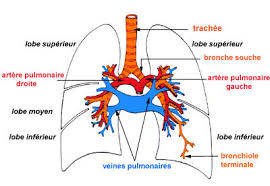
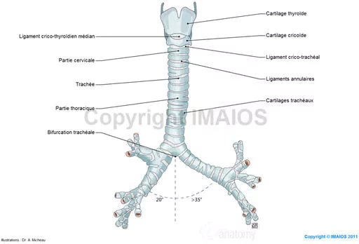

L'asthme
DefinitionL'asthme est une maladie inflammatoire chronique des voies aeriennes avec obstruction bronchique reversible spontanement si sous l'effet d'un traitement bronchodilatateur, en relation avec une hyperactivite e differents stimulis chez des patients predisposes.

L'association de ces facteurs provoque :
| Video de l'asthme |
| e Docteur Richard Martzolff Encyclopedie medicale Vulgaris |
Signes de gravite d'un asthme aigu
Arguments diagnostics et examens complementaires
Voir aussi :
|
Accueil
| Sciences infirmieres |
Soins et techniques
|
Pharmacologie et Therapeutiques
|
Examens
biologiques |
Examens medicaux
| Version imprimable e Samir ISP tous droits reserves design : xgraphik.com modifie par M. Pitte |
 haut
de page
haut
de page